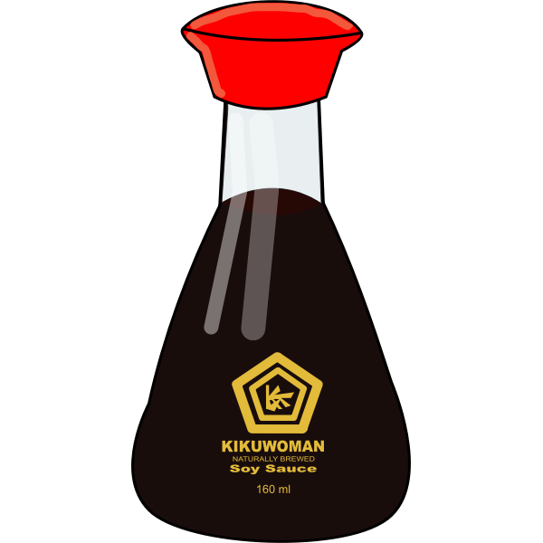
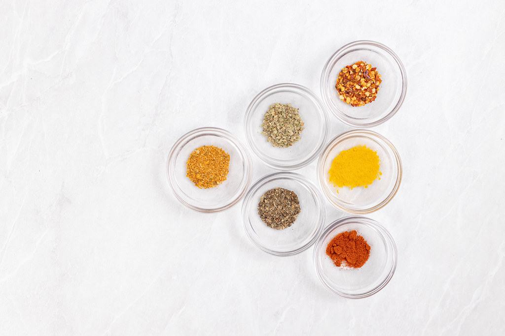
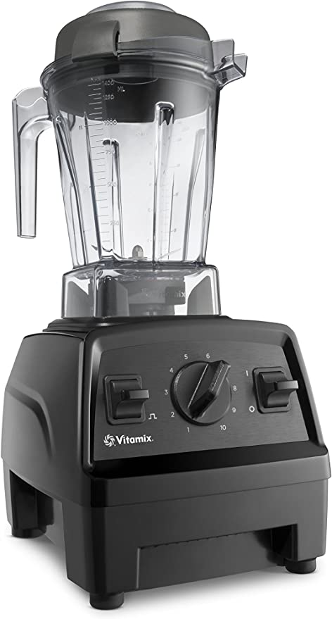

Welcome to my website! I have recipes and restaurants that should appeal to all kinds of tastes! I love to cook, so I want to make it more accessible and less daunting to college students. This page is a list of essentials that make any kitchen feel like you are a professional!
A list of equipment that anyone needs in a kitchen!
Ingredients that you should always have on hand in your kitchen!
Basic spices to make your meals flavorful!
Optional appliances to make your cooking easier!
